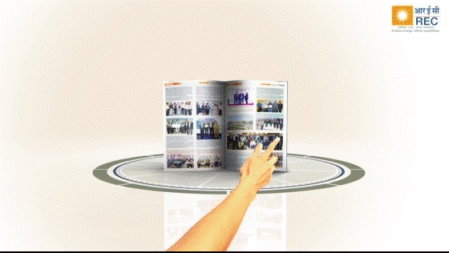
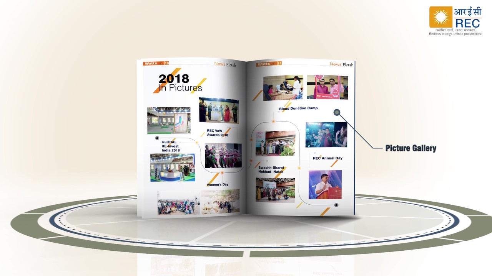
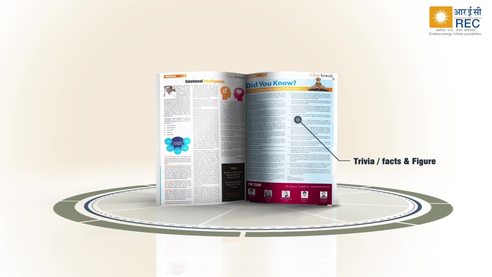
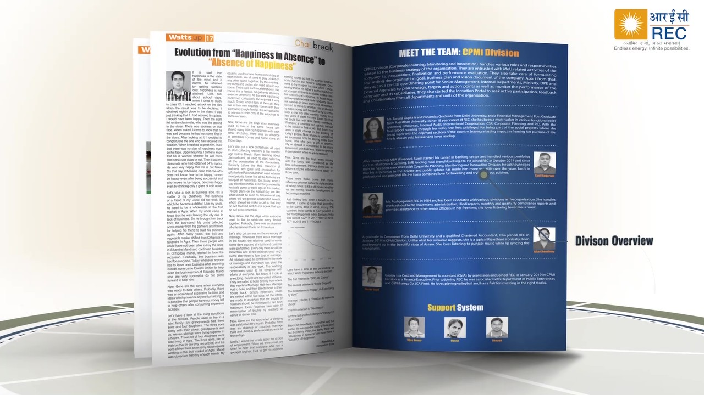

Case studies Watts Up
Watts Up: an employee magazine by the employees, for the employees
I conceived and launched Watts Up, REC's first multilingual employee publication, and as lead editor built it around the voices of employees at every level and location. The magazine has won awards, earned appreciation from employees and management, and is still published today.

Challenge
REC's employees ranged in age from their early twenties to sixty, came from engineering, finance, medicine, the civil service and marketing, and worked in more than 25 locations across India. I saw an opportunity to bring people closer beyond their job titles, help colleagues across generations and functions get to know one another, and give employees in regional offices the same chance to take part as those at the corporate office.
My role
I conceived the publication, launched it and led it as editor, from concept, name and section structure to contributor outreach and each issue's content.
Strategy
I conceived a magazine of the employees, by the employees and for the employees. Contributions were open to everyone, including contract staff, and contributors were published without their designations, so readers met people as colleagues. A mix of sections gave every reader something to enjoy, and a playful tone made the magazine something people chose to pick up.
Execution
- Editorial direction. As lead editor, set the editorial direction and themes for each issue and built a network of employee contributors in different locations and functions.
- Sections for every interest. Employee profiles in Up Close & Personal, team introductions in Meet the Team, themed employee articles in Focus, travel writing, stories and poems in Chai Break, company and power-sector news, a history timeline, a library corner, a photo gallery of events and an in-house comic strip.
- Distribution. Published a web version for all locations, and placed printed copies in a distinctive size at reception, notice boards, waiting areas and libraries to spark curiosity.
- Recognition for contributors. Thanked every contributor with REC merchandise, and opened a classifieds section for employees and departments to share news and initiatives.
Inside the magazine




Outcomes
- Employee contributions grew issue after issue, a key measure of the magazine's popularity.
- Watts Up won Best House Journal at the SCOPE Corporate Communications Excellence Awards 2019 and Best Internal Publication of the Year at the Kamikaze B2B Media Corporate Communication PR Summit & Awards 2018.
- The magazine earned appreciation from both employees and management.
- The magazine remains in publication years after its first edition in February 2018.
- It helped create long-term cultural change, giving employees at every level and location a shared space for their work, ideas and lives.
What I enjoyed
I enjoyed seeing colleagues get to know one another beyond their job titles. Each issue brought in new voices from different locations and generations, and giving those voices a home was deeply satisfying.